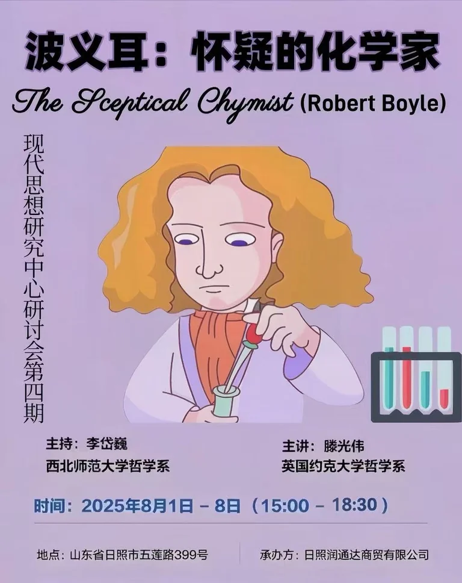
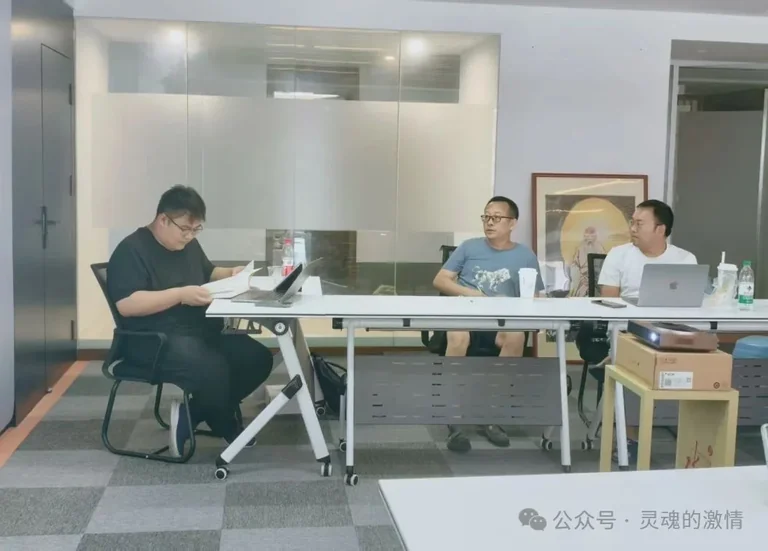

活动概述
现代思想研究中心 2025 年暑假研讨会第四期“波义耳：怀疑的化学家”于 8 月 2 日至 8 日举行。活动以 17 世纪科学巨擘罗伯特·波义耳的经典著作《怀疑的化学家》（The Sceptical Chymist）及相关文献为核心，讨论传统炼金术向现代化学转型的思想过程，并进一步延伸到与同时代哲学家的争论与交流。
本次活动由英国约克大学哲学系博士生滕光伟主讲，西北师范大学哲学系李岱巍老师点评，来自全国十多所大学的师生参加研讨，同时得到英国约克大学 Tom Stoneham 教授与澳大利亚天主教大学 Peter R. Anstey 教授的指导。
重温《怀疑的化学家》
纪要把上半场概括为一次围绕《怀疑的化学家》的集中重读。参与者通过集体阅读和小组讨论，系统回顾了波义耳如何以实验为基础，挑战亚里士多德四元素说与帕拉塞尔苏斯三原理学说，并逐步建构起自己的微粒理论。
滕光伟在讲解中结合波义耳的生平、空气泵实验与波义耳定律等关键材料，说明“怀疑”不仅是文本标题中的姿态，更是一种推动现代科学实践转型的方法论。纪要也特别强调，实验方法的坚持使科学逐渐从思辨走向实证。
与贝克莱《西里斯》的哲学对话
下半场的讨论不再停留在波义耳本人，而是把《怀疑的化学家》与贝克莱晚年的《西里斯》并置，比较二者围绕微粒理论、物质本质、因果关系以及科学与神学问题所形成的不同立场。
纪要将这一部分描述为一次从科学史进入科学哲学的推进：通过波义耳与贝克莱的并读，参与者得以看到现代科学革命如何同时引发关于现实、感知与神学秩序的哲学辩论。
点评与学术脉络
在总结环节中，李岱巍老师围绕贝克莱如何在《西里斯》中改造波义耳理论作了大量补充与点评，帮助参与者更清晰地把握现代科学哲学内部的连续性与分歧。纪要中这一部分非常重要，因为它使活动不只是一次读书会，而是进入了一条更完整的现代科学思想谱系。
延伸计划
纪要最后提出了明确的延伸工作：第一，推动《波义耳哲学文选》的编译，精选其核心著作与相关文献，提供新的中文版本；第二，与英国、法国、澳大利亚相关机构合作，筹备波义耳科学哲学主题的国际会议或系列讲座；第三，在《近代哲学》中组织相关专题稿件，形成进一步的研究传播平台。
这些计划把一次文本研读活动与中心的出版、国际合作和学术平台建设联系起来。
活动照片
